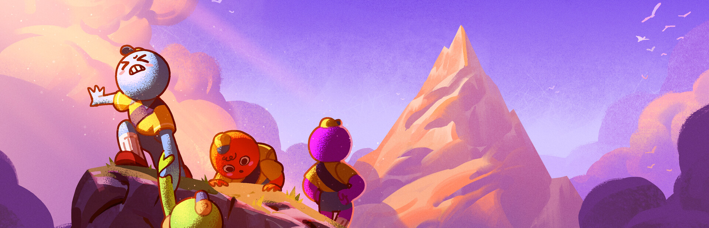

✓
BepInEx fetched
Latest compatible package is ready.

Shared progression, custom rules, one clean launch.
Credit Thunderstore · glarmer/PEAK_Unlimited
WINEDLLOVERRIDES=winhttp=n,b %command% · applied automaticallyFix Repair V4, then first-run again.